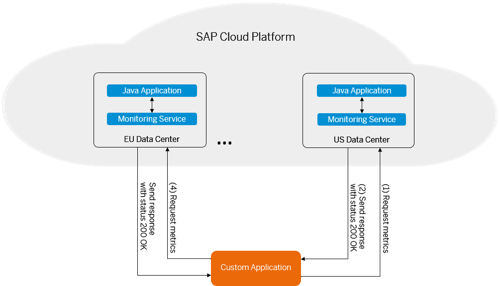

Monitoring Service
You can use the monitoring service to receive the metrics of your Java applications running on SAP Cloud Platform.
You can develop a custom application to request the states or the metric details of your Java applications and the applications' processes. That is accomplished via GET REST API calls. For more information about the format of the REST APIs, see Monitoring API.
Use the following request to receive all the metrics of a Java application located in the European data center (with hana.ondemand.com host):
https://api.hana.ondemand.com/monitoring/v1/accounts/<account_name>/apps/<application_name>/metrics
All Java applications include these default metrics. Custom metrics can also be added to the default metrics.
|
Metric |
Value |
|---|---|
|
Used Disc Space |
Percentage of the whole disc space currently used. |
|
Requests per Minute |
Number of HTTP requests processed by the Java application during the last minute. |
|
CPU Load |
Average percentage CPU usage during the last minute. |
|
Disk I/O |
Number of bytes per second currently being read or written to the disc. |
|
OS Memory Usage |
Percentage of the operating system memory currently used. |
|
Heap Memory Usage |
Percentage of the heap memory currently used. |
|
Average Response Time |
Average response time in milliseconds for all requests processed during the last minute. |
|
Busy Threads |
Current number of threads that are processing HTTP requests. |
You can use the monitoring service for the following actions:
-
To implement elastic scaling for your Java applications.
For more information, see Elastic Scaling on SAP Cloud Platform: How to Create a Simple Automatic Application Scaler on SAP Cloud Platform

-
To retrieve and show the metrics of many Java applications located on different accounts and in different data centers.
For more information, see Use the Monitoring Service to Retrieve Metrics from Different SAP Cloud Platform Applications
. -
To be notified of all critical metrics of many Java applications via e-mail, SMS, or another channel.
For more information, see Use the Monitoring Service for Critical Notifications and Self-Healing of SAP Cloud Platform Java Applications
. -
To take actions for application self-healing when critical metrics are received.
This operation is accomplished with the help of a lifecycle API. For more information, see Use the Monitoring Service for Critical Notifications and Self-Healing of SAP Cloud Platform Java Applications
.

-
A custom application requests metrics of a Java application from the monitoring service via a REST API call.
-
The monitoring service sends back a JSON response with a status code 200 OK.
The format of the REST API request specifies the metrics to be returned in the JSON response. For more information about the requests, see Monitoring API.
-
The custom application uses these metrics to perform operations.
-
The custom application requests the metrics of other Java applications by repeating steps 1 to 3.